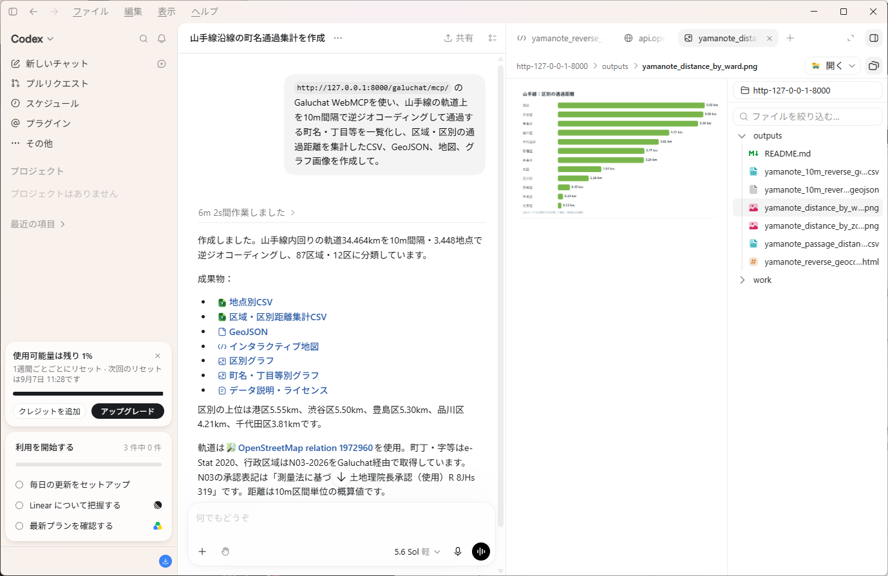

WEBMCP · CODEX · BROWSER LOCAL
WEBMCP IN ACTION

01 · CONNECT
WEBMCP ENDPOINT
https://nyatla.github.io/galuchat/mcp/
02 · AVAILABLE TOOLS
galuchat_get_api_spec
galuchat_resolve_position
galuchat_resolve_positions
galuchat_resolve_code
galuchat_resolve_codes
galuchat_get_code_map
jp-admin-n03-2026、jp-estat-r2ka-2020、tw-admin-nlsc-village-2026、uk-admin-ons-lad-2025、world-geoboundaries-cgazを選択できます。Choose from jp-admin-n03-2026, jp-estat-r2ka-2020, tw-admin-nlsc-village-2026, uk-admin-ons-lad-2025, and world-geoboundaries-cgaz.
03 · EXAMPLES
04 · SCOPE